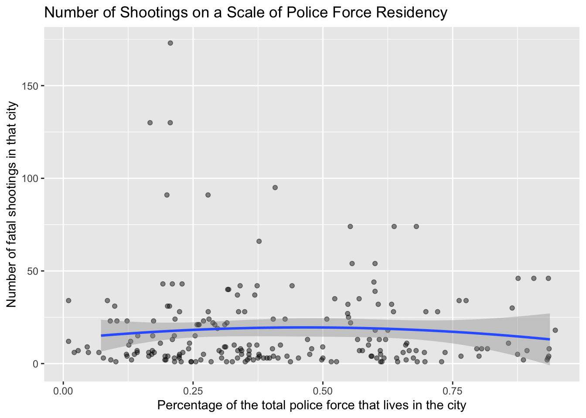
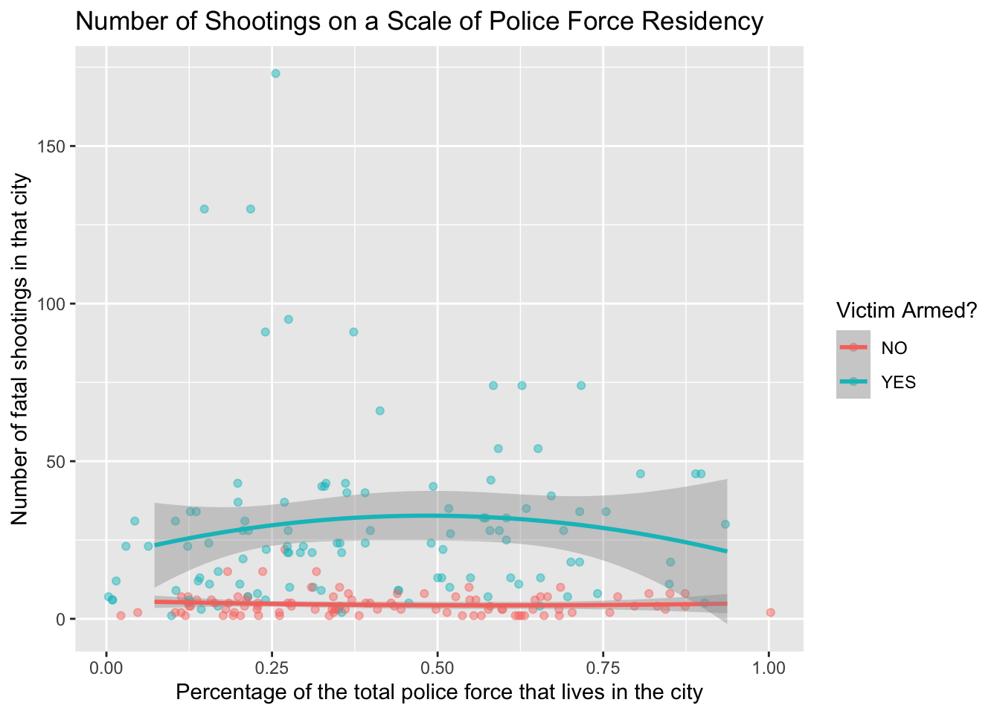

library(tidyverse)
library(usmap)
library(sf)
library(infer)
library(moderndive)Data
##Tidying Data
#creating dfs from .csv files
police_locals <- read_csv("data/police-locals.csv")
agencies <- read_csv("data/fatal-police-shootings-agencies.csv")
shootings <- read_csv("data/fatal-police-shootings-data.csv")
#removing old `city` tag from data set that we created when decatenated the city names
police_locals <- police_locals |>
select(-city_old)
# creating `agencies` df with just police departments
agencies <- agencies |>
filter(grepl("department", tolower(name))) |>
filter(!grepl("county", tolower(name)))
#creating binned categorical account of if shooting victim was `armed`
shootings <- shootings |>
mutate(armed = case_when(is.na(armed_with) ~ "NO",
armed_with == "unarmed" ~ "NO",
armed_with == "unknown" ~ "NO",
armed_with == "undetermined" ~ "NO",
armed_with == "gun" ~ "YES",
armed_with == "knife" ~ "YES",
armed_with == "blunt_object" ~ "YES",
armed_with == "other" ~ "YES",
armed_with == "replica" ~ "YES",
armed_with == "vehicle" ~ "YES"))
#creating df with only agency `names`, `id`, and `state`
agencies_ids <- agencies |>
select(name, id, state)
#creating df with `city`, `agency`, and `state` info for each shooting
shooting_agencies <- shootings |>
select(city, agency_ids, state)
#changing `shooting` var in `shooting_agencies` df to numeric
shooting_agencies$agency_ids <- as.numeric(shootings$agency_ids)
#creating df with `city` and `state` info for each agency by joining `agencies_ids` and `shooting_agencies`
agencies_w_cities <- agencies_ids |>
left_join(shooting_agencies, by = c("id" = "agency_ids", "state" = "state")) |>
drop_na(city) |>
distinct(id, .keep_all = TRUE)
#creating df with census data for each agency by joining `agencies_w_cities` and `police_locals`
agencies_census <- agencies_w_cities |>
full_join(police_locals, by = c("city" = "city", "state" = "state")) |>
drop_na(police_force_size) |>
distinct(id, .keep_all = TRUE) |>
mutate(majority = if_else(all >= 0.5, "TRUE", "FALSE"))
#creating df of only shootings involving agencies within `agencies` df
shootings_case <- shootings |>
right_join(agencies_census, by = c("city" = "city", "state" = "state")) |>
select(-agency_ids) |>
rename(agency_ids = id.y, id = id.x, agency = name.y, victim = name.x) |>
select(-location_precision, -race_source)#count shootings by agency
shootings_by_agency <- shootings_case |>
count(agency)
#find top 25 agencies with the most shootings
top_25_agencies <- shootings_by_agency |>
slice_max(n, n = 25)
# visulize top 25 agencies with the most shootings
ggplot(data = top_25_agencies,
mapping = aes(x = agency, y = n)) +
geom_col() +
theme(axis.text.x = element_text(angle = 75,
vjust = 1,
hjust = 1,
margin = margin(t = 5, b = 5)))
#mapping Locations of Police-Involved Shootings between 2015 and 2023
#load geo-viz libraries
library(ggmap)
library(maps)
library(mapdata)
#create blank map
usa <- map_data("usa")
states <- map_data("state")
#add locations of shootings to maps
shot_map <- ggplot(data = states) +
geom_polygon(aes(x = long, y = lat, fill = group, group = group), color = "white") +
coord_fixed(1.3) +
guides(fill=FALSE) + # do this to leave off the color legend
geom_point(data = shootings_case, aes(x = longitude, y = latitude), color = "black", size = .2) +
geom_point(data = shootings_case, aes(x = longitude, y = latitude), color = "red", size = .1) +
labs(title = "Locations of Police-Involved Shootings between 2015 and 2023",
captions = "This is only includes cities where we have agency census data.",
x = "Longitude",
y = "Latitude")#creating df with total shootings per agency and census data
agencies_census <- agencies_census |>
left_join(shootings_by_agency, by = c("name" = "agency"))
#prelim visualization of relationship between percentage of officer residency and number of fatal shootings per agency
agencies_census |>
ggplot(mapping = aes(x = all, y = n)) +
geom_point() +
geom_smooth(method = "lm", se = TRUE)#creating visualization of comparison Shootings in Cities where a Majority/Minority of Officers Reside
p0 <- shootings_case |>
ggplot(aes(x = majority, fill = armed)) +
geom_bar() +
labs(title = "Shootings in Cities where a Majority of Officers Reside",
caption = "This is only includes shootings where we have agency census data.",
x = "Does a majority a of the total police force live in the city?",
y = "Number of fatal shootings",
fill = "Victim Armed?")
p0
#calculate mean number of shootings per agency in cities where a majority of officers reside in the city
majority_mean <- shootings_case |>
filter(majority == TRUE) |>
count(agency) |>
summarize(maj_mean = mean(n))
#calculate mean number of shootings per agency in cities where a minority of officers reside in the city
minority_mean <- shootings_case |>
filter(majority == FALSE) |>
count(agency) |>
summarize(min_mean = mean(n))
#calculate a difference in means between the `majority` and `minority`
diff_in_means <- majority_mean - minority_mean
diff_in_means maj_mean
1 -2.575#tidy table
knitr::kable(head(diff_in_means))| maj_mean |
|---|
| -2.575 |
#fit single linear regression model for correlation between percentage of officer residency and number of fatal shootings per agency
fit <- lm(n ~ all, data = agencies_census)
fit
Call:
lm(formula = n ~ all, data = agencies_census)
Coefficients:
(Intercept) all
35.7782 -0.5874 #tidy `fit`
p1 <- get_regression_table(fit)
knitr::kable(head(p1))| term | estimate | std_error | statistic | p_value | lower_ci | upper_ci |
|---|---|---|---|---|---|---|
| intercept | 35.778 | 6.887 | 5.195 | 0.000 | 22.126 | 49.430 |
| all | -0.587 | 14.902 | -0.039 | 0.969 | -30.130 | 28.955 |
#add `armed` and `majority` to `shootings_by_agency` df
shootings_by_agency_census <- shootings_case |>
group_by(agency) |>
count(armed) |>
drop_na(n, armed) |>
right_join(agencies_census, by = c("agency" = "name")) |>
distinct(armed, .keep_all = TRUE)
shootings_by_agency_census <- shootings_by_agency_census |>
select(n.x, armed, all)
#fit multiple linear regression model for correlation between percentage of officer residency and victim armament and number of fatal shootings per agency
fit_multi <- lm(n.x ~ all + armed, data = shootings_by_agency_census)
fit_multi
Call:
lm(formula = n.x ~ all + armed, data = shootings_by_agency_census)
Coefficients:
(Intercept) all armedYES
4.117 1.211 24.921 #tidy `fit_multi`
p2 <- get_regression_table(fit_multi)
knitr::kable(head(p2))| term | estimate | std_error | statistic | p_value | lower_ci | upper_ci |
|---|---|---|---|---|---|---|
| intercept | 4.117 | 3.362 | 1.225 | 0.222 | -2.512 | 10.747 |
| all | 1.211 | 6.335 | 0.191 | 0.849 | -11.281 | 13.702 |
| armed: YES | 24.921 | 2.891 | 8.619 | 0.000 | 19.219 | 30.622 |
#visualize polynomial relationship between percentage of officer residency and number of fatal shootings per agency
ggplot(data = shootings_by_agency_census, aes(x = all, y = n.x)) +
geom_jitter(width = 0.10, height = 0, alpha = 0.45) +
geom_smooth(method = "lm", formula = y ~ poly(x, 2), se = TRUE) +
labs(title = "Number of Shootings on a Scale of Police Force Residency",
x = "Percentage of the total police force that lives in the city",
y = "Number of fatal shootings in that city")
#visualize polynomial relationship between percentage of officer residency and victim armament and number of fatal shootings per agency
ggplot(data = shootings_by_agency_census, aes(x = all, y = n.x, color = armed)) +
geom_jitter(width = 0.10, height = 0, alpha = 0.45) +
geom_smooth(method = "lm", formula = y ~ poly(x, 2), se = TRUE) +
labs(title = "Number of Shootings on a Scale of Police Force Residency",
x = "Percentage of the total police force that lives in the city",
y = "Number of fatal shootings in that city",
color = "Victim Armed?")
The model equation for fit is:
[ = 35.7782 - 0.5874 ]
Interpretation:
- The intercept, \(35.7782\), is the estimated number of fatal shootings when the percentage of officer in-city residency (
all) is \(0\). For each one-unit increase in the percentage of officer residency, the number of fatal shootings is expected to decrease by \(0.5874\) (\(-0.5874\)) units, assuming all other factors remain constant.
This model suggests that there is a negative association between the percentage of officer residency and the number of fatal shootings. However, it’s important to interpret the results in the context of your data and consider potential confounding factors, like whether or not the victim was armed.
The model equation for fit_multi considering victim armament (armed) is:
[ = 4.117 + 1.211 + 24.921 ]
The intercept, \(4.117\), is the estimated number of fatal shootings where the percentage of officer in-city residency (
all) is \(0\) and the victim was un-armed. For each one-unit increase in the percentage of in-city officer residency compared to the total force (all), we expect an increase of \(1.211\) fatal shootings, assuming the victim’s armament status (armedYES) remains constant.The coefficient for ‘armedYES’, \(24.921\), indicates that the victim is armed (
armedisYES), we expect an increase of \(24.921\) fatal shootings compared to when the victim is not armed (armedisNo), assuming the percentage of officer residency (all) remains constant.
In summary, the model suggests that the percentage of officer residency and whether the victim is armed are associated with the number of fatal shootings per agency even as we control for victim armament. However, as correlation does not imply causation, and other factors not included in the model may influence the outcomes.
#generate null distribution
null_dist <- agencies_census |>
specify(n ~ majority) |>
hypothesize(null = "independence") |>
generate(reps = 1000, type = "permute") |>
calculate(stat = "diff in means", order = c("TRUE", "FALSE"))
#compute observed test statistic
test_stat <- agencies_census |>
specify(n ~ majority) |>
calculate(stat = "diff in means", order = c("TRUE", "FALSE"))
#visualize p-value
null_dist |>
visualize() +
shade_p_value(obs_stat = test_stat, direction = "less")
#compute p-value
null_dist |>
get_p_value(obs_stat = test_stat, direction = "less")# A tibble: 1 × 1
p_value
<dbl>
1 0.225Inference for a Difference in Means
- \(H_0\): The mean total number of fatal shootings per agencies does not differ based on if a majority of the officers live in the city or not.
- \(H_A\): The mean total number of fatal shootings per agencies is fewer in cities where a majority of the officers live in the city then cities where they do not.
– \(H_0 : \mu_{maj} − \mu_{min} = 0\), or equivalently \(H_0 : \mu_{maj} = \mu_{min}\) – \(H_A : \mu_{maj} − \mu_{min} < 0\), or equivalently \(H_A : \mu_{maj} < \mu_{min}\)
#generate null distribution
null_dist_cor <- agencies_census |>
specify(n ~ white) |>
hypothesize(null = "independence") |>
generate(reps = 1000, type = "permute") |>
calculate(stat = "correlation")
#compute observed test statistic
test_stat_cor <- agencies_census |>
specify(n ~ white) |>
calculate(stat = "correlation")
test_stat_corResponse: n (numeric)
Explanatory: white (numeric)
# A tibble: 1 × 1
stat
<dbl>
1 -0.0470#visualize p-value
null_dist_cor |>
visualize() +
shade_p_value(obs_stat = test_stat, direction = "two.sided")
#compute p-value
null_dist_cor |>
get_p_value(obs_stat = test_stat, direction = "two.sided")# A tibble: 1 × 1
p_value
<dbl>
1 0Inference for a Correlation
\(H_O\): There is no relationship between percentage of the total police force that lives in the city they serve and number of fatal shootings.
\(H_A\): There is a relationship between percentage of the total police force that lives in the city they serve and number of fatal shootings.
\(H_0 : \rho = 0\)
\(H_0 : \rho \neq 0\)